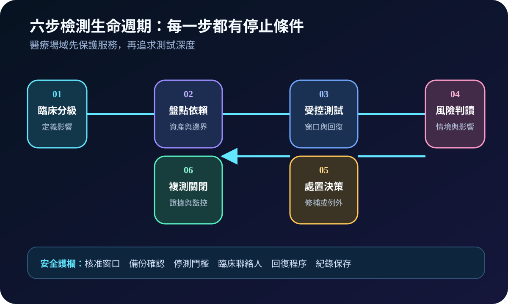
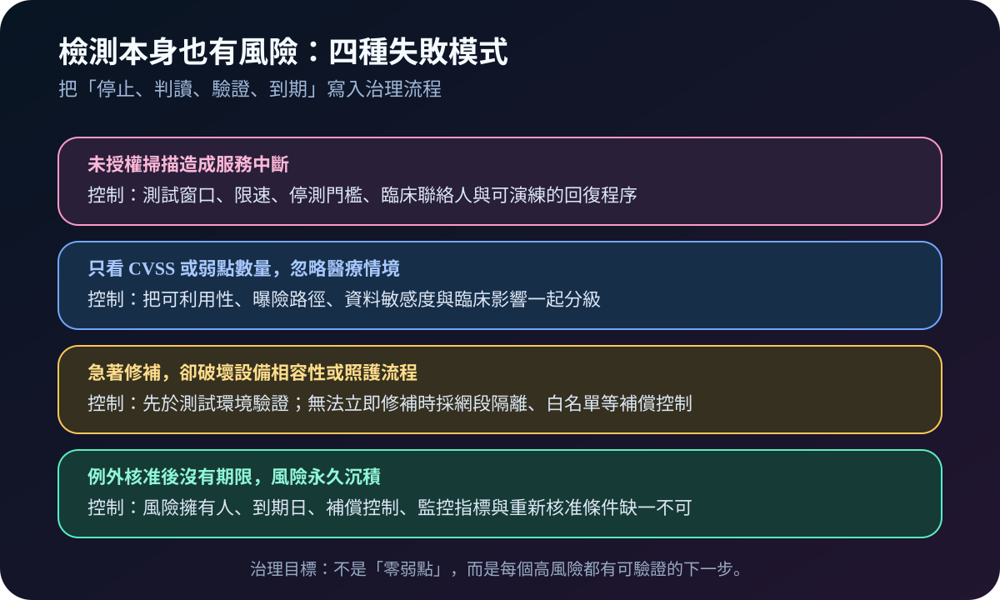

健康台灣深耕計畫-資安治理 · 2026-08-15
核心醫療系統如何做安全檢測：從攻擊面到複測關閉
作者：Dr. William｜醫療資訊與資安治理實務工作者
醫療資安治理弱點管理滲透測試軟體供應鏈
這項能力要解決的，不是「掃描報告有沒有交」，而是核心醫療系統的可利用缺口能否被發現、分級、處置並以證據關閉。安全檢測應被視為風險治理生命週期，而不是一次年度體檢。
名詞解釋：四種方法回答不同問題
攻擊面是可能被接觸與利用的系統、介面、帳號及供應鏈邊界。組態檢查比對安全基線；弱點掃描找已知缺口；滲透測試在授權範圍驗證缺口能否串成攻擊路徑；SBOM（Software Bill of Materials）記錄軟體元件，協助判斷供應鏈曝險。掃描分數只是線索，最終仍要結合可利用性、資料敏感度與臨床影響。
用語不確定性：相關規劃材料中可見「Claude Mythos 安全檢測」字樣，但材料未建立其正式定義、範圍或驗收方式。該字樣不應直接視為公認標準；採購或 KPI 引用前，應先向權責機關或計畫窗口確認。
規劃：先定義邊界、護欄與驗收
規劃應先依病人安全與服務中斷影響分級 HIS、EMR、LIS、PACS、身分服務及關鍵介面，再畫出資料流、管理端點、第三方連線與版本依賴。角色至少包含系統負責人、臨床代表、資安、基礎設施與供應商。測試計畫要寫明授權範圍、時窗、限速、停測門檻、聯絡與回復程序；驗收則看高風險處置率、逾期例外、複測通過率與資產覆蓋，而不是只比弱點數量。

實作：用一套系統跑完生命週期
- 建立基線：確認資產擁有人、版本、外露面、帳號、元件與既有補償控制。
- 受控檢測：先做低干擾組態及弱點檢查，再於核准範圍執行滲透測試；所有活動留下時間與工具版本。
- 情境分級：把發現項目連回攻擊路徑、資料與臨床服務，指定風險擁有人及期限。
- 處置複測：修補後確認功能與安全；無法立即修補時，以網段隔離、白名單或監控降低風險，並設定例外到期日。可先由一套高影響系統完成閉環，再逐步擴大到其他系統。
風險：檢測不當也會傷害服務
常見失敗包括未授權掃描造成中斷、只看 CVSS 忽略醫療情境、修補破壞設備相容性，以及例外核准後永久擱置。測試深度必須與系統脆弱度相稱；高風險不是一律立即變更，而是要有風險擁有人、可驗證的補償控制、期限及重新核准條件。

可執行清單
- 核心系統、介面、管理端點與第三方連線是否都有擁有人？
- 組態檢查、弱點掃描、滲透測試與 SBOM 是否各自回答明確問題？
- 測試是否有授權時窗、停測門檻、臨床聯絡人與回復程序？
- 每項高風險是否有期限、處置證據與複測結果？
- 風險例外是否有補償控制、到期日與重新核准條件？
結語
成熟的核心系統安全檢測不以報告厚度衡量，而以風險是否被正確分級並持續下降衡量。先把一個系統的發現、處置與複測做完整，比同時掃遍全院卻無人負責更有效。
內容說明
本文依健康台灣深耕計畫相關治理內容整理，並提供治理與執行框架；不取代主管機關正式公告、法律意見或個別醫院風險評估。